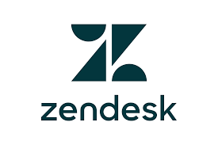

Consultoria Zendesk: Atendimento ao Cliente de Outro Nível
Implemente, otimize e automatize o Zendesk para encantar clientes, aumentar vendas e transformar o suporte da sua empresa.
- Especialista em Zendesk e CX
- Resultados rápidos e mensuráveis
- Foco em performance e ROI

O que é o Zendesk?
O Zendesk é a plataforma líder global em atendimento ao cliente, suporte e experiência do usuário. Com ele, sua empresa centraliza tickets, integra canais (WhatsApp, e-mail, chat, telefone), automatiza processos e oferece um suporte ágil, eficiente e personalizado.
Benefícios para sua empresa
WhatsApp e Omnichannel
Atenda clientes em todos os canais (WhatsApp, chat, e-mail, telefone) em um só lugar, com histórico e automação.
Automação de Tickets
Automatize tarefas repetitivas, direcione tickets e reduza o tempo de resposta com inteligência e regras personalizadas.
Relatórios e Insights
Tenha dados completos sobre atendimento, satisfação e performance para decisões estratégicas.
Experiência do Cliente
Encante clientes com respostas rápidas, personalizadas e suporte de excelência em todos os pontos de contato.
Como posso ajudar sua empresa?
Implantação Ágil
Coloque o Zendesk em operação rapidamente, com integrações e fluxos sob medida para o seu negócio.
Personalização e Automação
Criação de automações, gatilhos, macros e fluxos inteligentes para aumentar a produtividade do seu time.
Treinamento e Suporte
Capacitação do seu time para extrair o máximo do Zendesk, além de suporte dedicado e acompanhamento.
Por que investir em atendimento de excelência?
Vantagens competitivas
- Aumente a satisfação e fidelização dos clientes
- Reduza custos operacionais com automação e autoatendimento
- Ganhe agilidade e escalabilidade no suporte
Prepare sua empresa para o futuro do atendimento, com tecnologia de ponta e experiência humanizada.
Prova de experiência e resultados
Minha experiência
- Projetos de implantação e automação com Zendesk
- Integração de múltiplos canais e automação de tickets
- Resultados comprovados em agilidade e satisfação do cliente
Depoimento real
"O Wesley otimizou todo nosso atendimento com Zendesk. Hoje, resolvemos chamados muito mais rápido e nossos clientes estão mais satisfeitos!"
— Cliente do setor de tecnologia
Vamos conversar?
Fale comigo agora mesmo no WhatsApp e receba um diagnóstico gratuito para sua empresa:
Falar no WhatsAppSua solução Zendesk pode ser tão única quanto o seu negócio. Solicite uma consultoria personalizada!